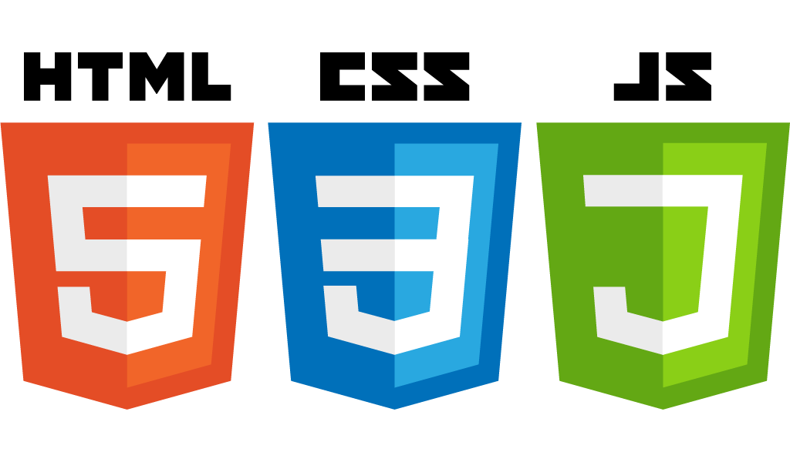
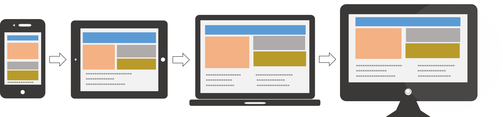

Mis habilidades

HTML
Angular

Responsive
Quien soy
Nacido y críado en Barcelona, soy un amante de las nuevas tecnologías. Justamente por eso estudié el graduado universitario Multimedia en LaSalle Bonanova (Barcelona), dónde aprendí todo tipo de programación (C, Java, PHP, HTML), así como hice proyectos de videojuegos, videoclips, aplicaciones webs y Android... En definitiva, toqué todos los palos. Gracias a eso descubrí que lo que mas me interesaba era el desarrollo web.
Entonces, decidí aprender más por mi mismo sobre este mundo, concretamente desarrollador Frontend. Me puse a estudiar el nuevo CSS3, HTML5 y a profundizar en JS.
Despues de hacer cursos sobre Responsive (Mobile first) y AngularJS, ahora mismo estoy estudiando Polymer y tengo pensado aprender Nodejs.
Me encanta aprender nuevas cosas, soy una persona muy receptiva a las nuevas tecnologias, y me encantan.
En un ámbito mas personal, valoro mucho el buen rollo en un ambiente de trabajo. Intento ser siempre positivo a la vez que realista. Criticar por criticar no sirve de nada, siempre hay que haber bondad en ello para mejorar cada dia.
A la vez, soy una persona que cuida el detalle y le da mil vueltas a todo siempre que se pueda.
En fin, este soy yo, espero haberte gustado ^^
Aptitudes
GIT
Trabajo en equipo
SCRUM
Facilidad de aprendizaje
Multidisciplinar
Linux
Otros lenguajes
Otros conocimientos
Gulp
Stylus
jQuery
Adobe Creative Suite
Adobe Creative Suite
3Ds Max
Realidad aumentada
Realidad virtual
Graficos
Procesado digital de señales, imagen, audio y habla